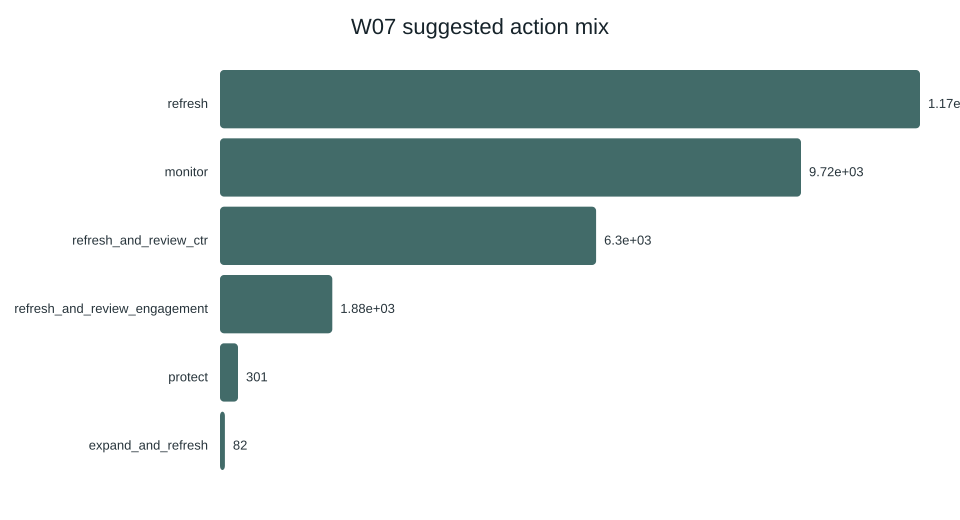
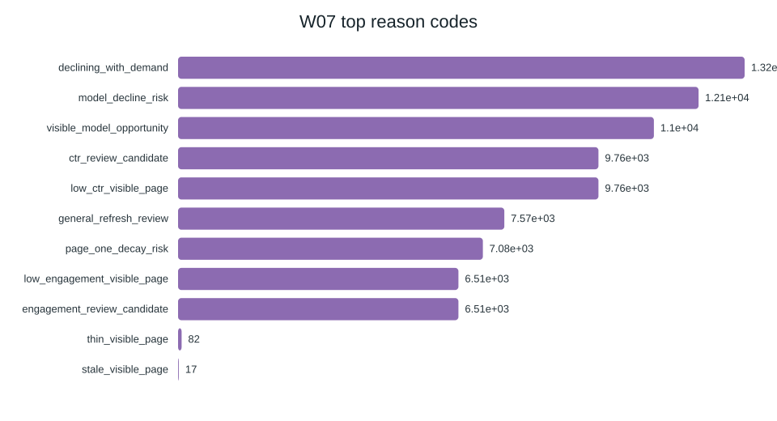

Abstract
Which content pages should an SEO or content editor review first for refresh, expansion, protection, pruning, or monitoring when the inventory is too large to scan by hand?
I work on the FlyRank ML Internship dataset: a 30,000-row anonymized starter snapshot (32 pseudonymized clients, trailing-90-day metrics) for the validated ranking results, with the gated warehouse release (~79M daily performance rows, Jan 2025–Jun 2026) used to define a public-safe data contract and a stronger future-window label path.
Method: a transparent CTR-gap rule baseline, then logistic regression and random forest trained without trend/label features, evaluated with client holdout and Precision@K (K=10, 50).
On the same client-holdout split (test n=2,325, 6 unseen clients, base rate 0.391), the random forest measured Precision@50=0.900 and ROC AUC=0.764 versus 0.300 for the CTR-gap baseline — a directional ranking lift under a snapshot decline proxy.
The output is a ranked content-action playbook with reason codes for human review, not an automated publishing system and not causal evidence that edits recover traffic.
Introduction / Problem statement
Imagine an editor with one afternoon and 30,000 pages. Marking every “down” trend still leaves thousands of candidates. Some are high-impression page-one URLs with a CTR gap; others are low-demand noise. Wrong tops waste hours or miss a visible page that is sliding.
This paper asks: which pages should be reviewed first for refresh, expansion, protection, pruning, or monitoring?
Unit of analysis: one content item (one page). Output: a ranked queue with a suggested action and short reason codes. A human still opens the page before any edit. Wrong-call costs: false positives burn edit capacity; false negatives leave high-demand URLs unreviewed.
Data and ML help because demand, position, age, CTR, and engagement interact — a single if-statement cannot triage the mix. The goal is decision support, not “predicting Google’s algorithm.”
Data
Starter snapshot (validated ranking). data/raw/content_refresh_anonymized.csv — 30,000 rows × 44 columns, one row per pseudonymized content item, 32 clients, trailing-90-day search and engagement metrics. Declining-label rate on this slice: 0.542.
Warehouse release (contract + scale path). Hugging Face gated dataset FlyRank/internship-warehouse (build v20260703): dim_clients (104), dim_content (~520k), fact_content_daily_performance (~79M rows, report_date × client × content, 2025-01-27 → 2026-06-30). Mid-panel partitions (e.g. March 2026) were used to write a public-safe data contract; the sealed final month was not used to develop label logic.
Excluded from model features (and why).
trend_direction,trend_pct, and the derivedis_declining_label— label trap if used as inputs.content_id/client_id— grouping and splits only, never features.- Titles, URLs, domains, client names, raw queries — private / unsafe for a public paper.
- GA4 metrics on rows where data are zero-filled without availability — zeros are not “no engagement.”
fact_content_query_90dwhen building a mid-panel contract — its fixed end-of-panel window would misalign features.
Rate columns in the starter are ×100 percentages (e.g. ctr = 0.76 means 0.76%). avg_position = 0 means missing position, not rank zero.
Methodology
Assumptions. Editors only open the top of a list, so Precision@K matches the job better than overall accuracy. A contemporaneous trend proxy is useful for triage practice, but it is not a sealed next-window outcome.
Label (proxy). is_declining_label = 1 when trend_direction == "down" on the starter snapshot. Honest limit: the label is derived inside the same window as many of the metrics — directional for ranking practice, not proof of future recovery.
Features. Logged 90d impressions/clicks/sessions, days with impressions/sessions, content age, days since last update, CTR, average position (plus a has-position flag), engagement rate, scroll rate, word count with a missingness flag. No trend fields in X.
Baseline. Week-4 CTR-gap rule: impressions_90d ≥ 500 AND 0 < avg_position ≤ 20 AND ctr < 0.5, scored by log1p(impressions_90d) among firings — reason code low_ctr_visible_page. Signal audit on this snapshot: CTR-gap among visible pages CONFIRMED; deep-stale age alone OPPOSITE (so age is not used as a solo green light).
Models. Logistic regression (readable linear baseline among learners) and random forest (non-linear, feature importances). Random state 42.
Validation design. Client holdout (~20% of clients held out; 26 train / 6 test). Pages from the same client share templates and update habits — a random row split would flatter the model.
Leakage checks. Excluding trend fields from X. A deliberate attack that adds trend_pct drives ROC AUC and Precision@50 to 1.0 with trend_pct dominating importance — proof the trap is real. Random-row vs client-holdout gap on Precision@50 was about 0.06 in the audit notebook.
Results
All numbers below are on the same client-holdout split (test n=2,325; test base rate=0.391).
| Method | Precision@10 | Precision@50 | ROC AUC | Avg precision |
|---|---|---|---|---|
| CTR-gap rule baseline | 0.10 | 0.30 | 0.557 | 0.410 |
| Logistic regression | 0.60 | 0.54 | 0.715 | 0.550 |
| Random forest | 0.90 | 0.90 | 0.764 | 0.668 |
Measured takeaway: on this holdout, the random forest put more true declining-proxy pages into the top 50 than the transparent CTR-gap rule (0.90 vs 0.30). That is a ranking-quality result under the proxy label — not a forecast of traffic after an edit.


Limitations & honest framing
- Proxy label. Decline is snapshot trend, not a sealed next-30-day warehouse outcome. Precision@K answers “looks like a review candidate under this proxy,” not “will recover if refreshed.”
- No causal design. Observational ranking cannot prove that editing a page causes traffic recovery.
- Starter scale for metrics. Holdout metrics are on 30k anonymized pages / 32 clients — not a benchmark on the full ~79M-row daily table.
- Holdout sensitivity. With six test clients, Precision@50 can move with membership; the random-split number was higher (0.96) than client holdout (0.90).
- Staleness. Deep-stale age alone did not track decline cleanly on this snapshot — do not automate refresh from age alone.
- Not Google’s algorithm. Features are portfolio search/engagement outcomes, not ranking-system internals.
Safe claim language used throughout: observed, measured, directional, decision-support.
Ranked recommendations
The action playbook blends model probability with a transparent baseline score (100 × (0.70 × model + 0.30 × normalized baseline)), attaches reason codes, maps archetypes to actions, and labels confidence. Editors should open high-confidence, high-demand rows first; treat low-demand rows as monitor; never auto-publish or auto-prune from the score.
| Archetype | Suggested action | Why (reason family) |
|---|---|---|
| Visible CTR gap | refresh_and_review_ctr |
High impressions, page 1–2, low CTR |
| Engagement gap | refresh_and_review_engagement |
Enough sessions, weak engagement/scroll |
| Thin visible | expand_and_refresh |
Visible demand + thin word count |
| High-demand decline risk | refresh |
Model / demand flags with meaningful impressions |
| Strong visible | protect |
Healthy CTR/position, low model risk — do not churn |
| Low-demand noise | monitor |
Little search demand — skip heavy rewrites |
No-go (must not automate): auto-publish edits; auto-prune/redirect; claim refresh recovers traffic; feed trend_* as features; export client names, domains, or raw queries; age-only refresh triggers.


Reproducibility
Anyone with the public repo can inspect and re-run the track:
- Repository
- w04 baseline · w05 model · w06 validation · w07 playbook · capstone
- Metric receipts:
work/outputs/w05_model_vs_baseline.json,w06_validation_audit.json,w07_action_playbook_metrics.json - Environment:
requirements.txt· seed:RANDOM_STATE = 42 - Fresh clone: install requirements, open the notebooks under
work/notebooks/, Runtime → Run all (Colab badges on each notebook)
Queue CSVs under work/outputs/ are regenerated locally and stay out of git by design (CI leak-guard). Metrics JSON and figures are committed.
Acknowledgments & data credit
Built on the FlyRank ML Internship dataset. Crediting the data source is standard research practice. Thanks to the FlyRank internship program for the anonymized starter slice, the warehouse release, and the emphasis on honest claim language.
Updated July 2026 · Public-safe: no client names, domains, raw URLs, or private queries.